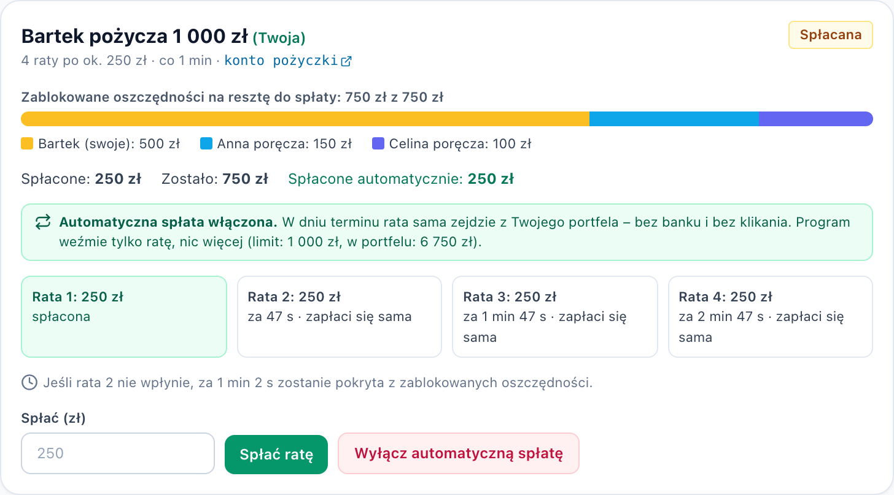
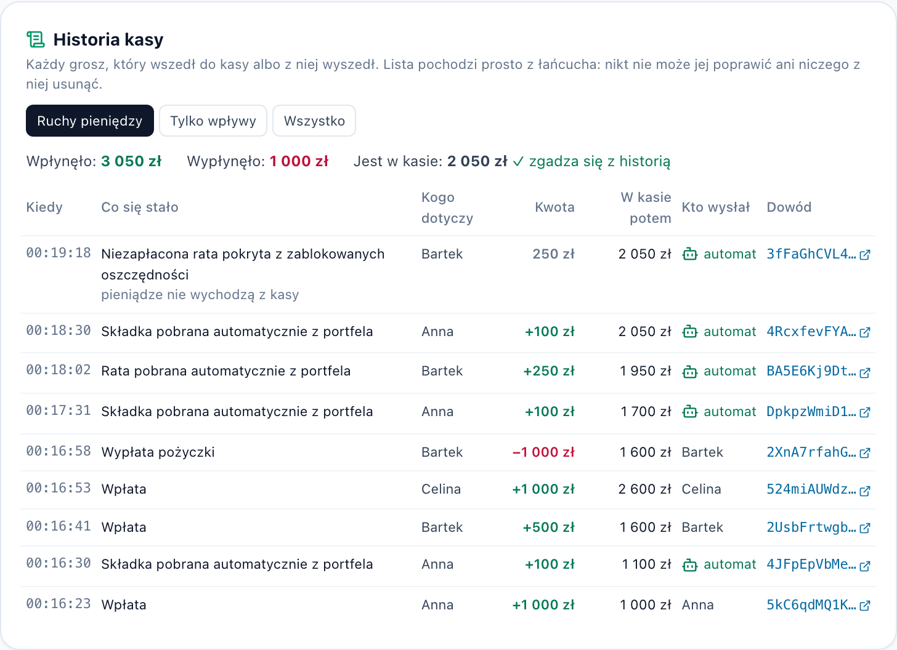

Savings, 0% loans, direct debits and standing orders with no board, no treasurer and no bank. Every rule is a Solana program with no admin key.
people who approve a loan
of every loan covered by locked savings
installments leave the wallet by themselves, sent by a bot with no rights
Who we build for: small groups in Poland that already pool money. Workplace kasy zapomogowo-pożyczkowe (KZP) in schools, offices and factories, teams with a "kasa koleżeńska", friends and families lending to each other.
Members save every month and borrow at 0%, with co-members vouching. It works only through:
Without such a group, the same services come from a bank: credit with interest, standing orders, direct debits, a BIK score.
A PKZP treasurer in Jawor county took 61,000 zł of colleagues' savings and lost it on a crypto exchange.
Puls Legnicy, March 2024
A PKZP cashier hid 261,510 zł of withdrawals with falsified cash reports for ten years.
Court of Appeal in Katowice, II AKa 98/15
Informal groups have it worse: "the kasa" is simply someone's private bank account.
| Service | Intermediary today | Kasa bez zarządu |
|---|---|---|
| Keeping savings | Treasurer, bank | Vault owned by the program; only the rules move tokens out |
| Credit | Board, bank scoring | Nobody approves: pays out when own + guarantors' locked savings cover 100%, at 0% |
| Direct debit of installments | Employer's payroll, bank | Revocable SPL mandate to the member's own PDA; from the due date anyone pulls only what is due |
| Debt collection | Board, collection agency | After grace anyone collects from collateral: borrower first, then guarantors |
| Standing order to save | Bank | Standing contribution, pulled once per period under the same mandate |
| Statement & credit history | Bank, BIK | Kasa history from the chain with the balance after every move; a guarantor sees the borrower's record across all kasas |
| Changing the rules | General meeting, board | No instruction changes them; no admin key |
Anyone joins. Optional standing contribution, pulled every period.
Own free savings lock first; co-members pledge the rest.
One transaction: loan to the wallet and an SPL allowance for the installments.
The bot pulls what is due from the wallet; collateral unlocks, guarantors first.
Bartek borrowed 1000 zł in 4 installments (own 500, Anna 300, Celina 200). On the due date the bot pulls 250 zł from his wallet. He signs nothing. Anna and Celina get 250 zł unlocked, 3:2.
Installment 2: the bot's pull is refused (NoMandate). After grace the bot collects 250 zł from Bartek's locked savings; later installments take his last 250 zł, then Anna and Celina pro rata.
Bartek kept the cash, lost his savings. Anna −150 zł, Celina −100 zł: the risk they chose. Fund: 0 zł lost. Everyone withdraws the rest; vault ends at 0. All on devnet.

// instructions/autopay.rs: no signer required pub fn handle_pull_installment(ctx) { let due = loan.overdue(now, period, 0)?; require!(due > 0, InstallmentNotDue); // allowance the borrower gave to // THEIR member PDA, capped by balance let amount = due.min(mandate_available( &from, &borrower_member.key())); require!(amount > 0, NoMandate); pay_in_by_mandate(.., amount)?; // PDA signs book_repayment(..)?; // guarantors first } // from.owner == loan.borrower, or rejected
The SPL Token program enforces the allowance; ours enforces the amount and the date. The bot only pays the fee; if the mandate is gone, collateral pays after grace.
Pay-out requires locked savings = loan amount. Repayments (by hand or by mandate) release collateral; collection consumes it. Collateral always equals what is still owed.
vault = Σ savings − Σ lent
So anyone can withdraw what is theirs at any moment. The tests end with a bank run: everyone withdraws everything, vault at 0.
The borrower can revoke it any time. The fund never depended on it: collateral covers what the wallet doesn't.
Only a guarantor who vouched for someone who didn't pay can lose, at most the pledge. Now they can read the borrower's on-chain record first.
| Who goes silent | What happens |
|---|---|
| Borrower | Revoked mandate or empty wallet: collateral pays after grace, then guarantors |
| Guarantor | Nothing to do: the pledge unlocks as the loan is repaid |
| The bot | Nothing breaks: no rights; anyone presses the same buttons or runs it |
| Founder, us, the site | Nothing: no rights; program + IDL on-chain |
| Action | Who |
|---|---|
| Join, deposit, withdraw free savings | Anyone, for themselves |
| Give / revoke a mandate | Wallet owner (SPL approve / revoke) |
| Pull what is due under a mandate | Anyone: only due, only that wallet, within the allowance |
| Repay, collect overdue | Anyone |
| Change rules, move others' savings | No instruction allows it, for anyone |
Honest caveat: on devnet our deploy key can still upgrade the program code. Kept for bug fixes during the hackathon; next: a members' multisig, or --final.

Whoever runs it is the intermediary: they can edit a balance, hold back a withdrawal or "borrow" from the pot, which is how the cases on slide 2 happened. Here the balance is a program-owned account and the rules are public code no instruction can bypass.
Wallet-to-wallet payments without a bank already exist. What still needs one is credit, a direct debit someone honours, a standing order and a credit record. Those are what the program replaces; a direct debit needs no trusted bank when the token program caps it and our program sets the amount.
For physical goods someone must judge delivery: an arbiter is still an intermediary. We chose a relationship where the program sees every condition it enforces: deposits, balances, the schedule, the clock, the allowance.
Try it: web-production-ad49f.up.railway.app · Code: github.com/jxroo/kasa-bez-zarzadu